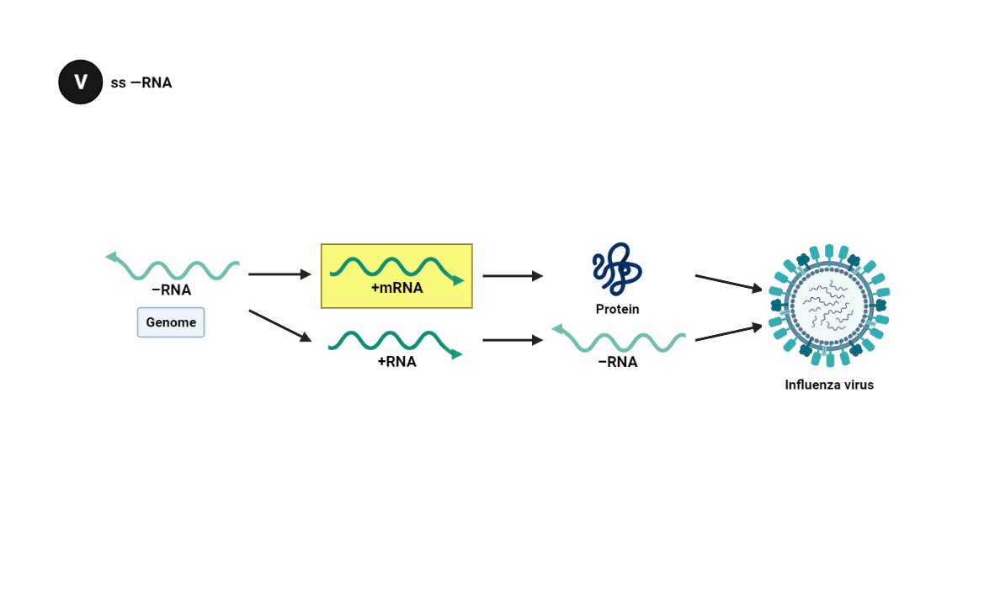
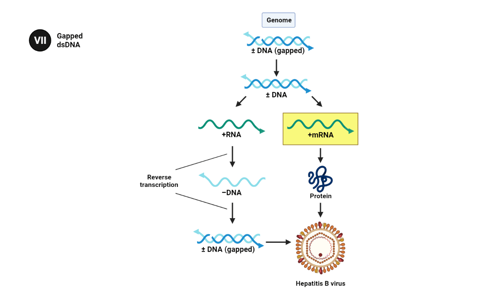

+mRNA must be made from all viral genomes in order for viral
proteins to be translated. Classes II, IV, VI and VII require
intermediaries before +mRNA can be produced.
The negative strand of dsDNA viruses is used to transcribe +mRNA.
dsDNA viruses make use of several mechanisms to replicate their
genomes.
The ssDNA, which can be positive or negative, is made into the
dsDNA form by a DNA polymerase upon entering a host cell.
The +mRNA is transcribed from the negative strand of the dsRNA.
The +mRNA is used for both translation of the viral proteins and
replication of the dsRNA genome.
The ss +RNA genome functions as +mRNA, so viral proteins can be
translated immediately. The ss +RNA also produces a negative
strand of -RNA from which positive strand copies of the genome
will be produced.

The +mRNA is transcribed directly from the negative sense genome.
Retroviral ss +RNA viruses use reverse transcription to produce a
dsDNA strand. It is called a provirus because it is integrated
into the host cell genome, from where the genomic +RNA is
transcribed and viral proteins are translated. See
“HIV” by the same author for details on reverse
transcription and HIV.

dsDNA retroviruses have a gap in one of the strands of the genome,
which is subsequently repaired. From this a +RNA strand is
transcribed which is then reverse transcribed into genomic, i.e.
gapped, dsDNA.
Baltimore classification groups viruses together based on their manner
of mRNA synthesis. Characteristics directly related to this include
whether the genome is made of deoxyribonucleic acid (DNA) or
ribonucleic acid (RNA), the strandedness of the genome, which can be
either single- or double-stranded, and the sense of a single-stranded
genome, which is either positive or negative. The primary advantage of
Baltimore classification is that by classifying viruses according to
the aforementioned characteristics, viruses that behave in the same
manner can be studied as distinct groups.